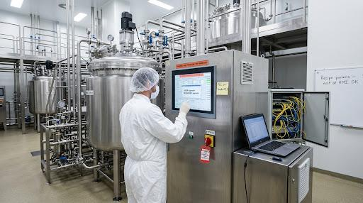

Pharma / Biotech Manufacturing Plant
Bioreactor cleanroom suite — DCS/MES, serialization line, batch records
cyber safety good practice — hover or tap a number.
Assets, people & processes in this scene
Key OT/IoT assets
People & roles
Processes
What to look for
A GMP bioreactor and cleanroom suite. Operators run a batch from HMIs on a process DCS; an MES pulls recipes and writes electronic batch records; a serialization/packaging line runs downstream; a bioreactor SIS protects against over-pressure and runaway reactions.
HMI signed in with a shared 'operator' account; no per-user identity, so batch actions can't be attributed.
3-3SR 1.1Human user identification and authentication4-2CR 1.1Human user identification and authentication84.09OperationSIS access control and independence from the BPCSBatch/recipe parameters can be changed directly at the HMI with no authorization step or second check.
3-3SR 2.1Authorization enforcement3-3SR 3.4Software and information integrityPLC#8Validate HMI input variables at the PLC level, not only at the HMIUnmanaged engineering laptop and USB drive plugged straight into the control cabinet / engineering port.
3-3SR 2.3Use control for portable and mobile devices4-2CR 2.13Use of physical diagnostic and test interfaces3-3SR 3.2Malicious code protectionBioreactor over-pressure trip left in BYPASS with no management-of-change record.
84.09OperationBypass / override management for the SISPLC#2Track operating modesPLC#15Define a safe process state in case of a PLC restartMES/IT and bioreactor PLCs share one flat VLAN — no zone boundary between business and process.
3-3SR 5.1Network segmentation3-3SR 5.2Zone boundary protection4-2CR 5.1Network segmentationPLC/HMI still on the default vendor credential printed on a sticky note.
3-3SR 1.5Authenticator management3-3SR 1.7Strength of password-based authentication4-2CR 1.7Strength of password-based authenticationContractor exports historian/batch data to a personal USB drive with no control on the data flow.
3-3SR 4.1Information confidentiality3-3SR 5.3General purpose person-to-person communication restrictions3-3SR 2.3Use control for portable and mobile devicesGOOD PRACTICE: serialization line PLC runs a checksum / integrity check on its program and alarms on change.
PLC#5Use cryptographic and/or checksum integrity checks for PLC code3-3SR 3.4Software and information integrity

Photoreal image-generation prompt
Feed this to your image tool to produce a photoreal “spot-the-issue” base scene that matches the corporate example (the visible tells map to the findings above).
Photorealistic wide-angle shot inside a pharmaceutical bioreactor cleanroom, stainless-steel fermenter tanks and piping, an operator in a white gown and hairnet at a large HMI touchscreen. Visible tells for a 'spot the cyber-physical issue' training scene: the HMI shows a shared login 'operator / operator', a yellow sticky note on the panel reads 'PLC pw: Vendor123', a red-tagged SIS bypass switch is flipped to BYPASS with an alarm banner 'HIGH PRESSURE TRIP INHIBITED', an engineering laptop is plugged into the control cabinet by a USB cable with a USB thumb drive next to it, an unlocked network switch cabinet with IT and OT cables mixed together, a whiteboard reading 'Recipe params – edit at HMI OK'. Bright clinical lighting, shallow depth of field, realistic industrial detail, no text overlays or annotations.